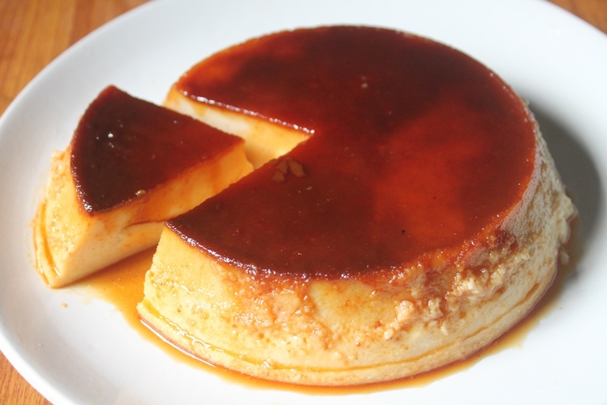

Caremel pudding

Ingredients
- 1 cup granulated sugar
- 2 cups whole milk
- 3 large eggs
- 1/2 cup granulated sugar
- 1/2 teaspoon vanilla extract
- Pinch of salt
HOW TO MAKE ?
- In a saucepan over medium heat, melt the sugar until it becomes a deep amber color. Be patient and resist the urge to stir, as this will make the sugar crystallize.
- Carefully remove the saucepan from the heat and let it cool for a few minutes.
- In a medium bowl, whisk together the eggs, sugar, vanilla extract, and salt until well combined.
- Gradually whisk in the milk.
- Pour the custard into the prepared ramekins or baking dish.
- Preheat the oven to 325°F (163°C).
- Cover the puddings with plastic wrap and refrigerate for at least 2 hours, or up to overnight.
Contact us for more details